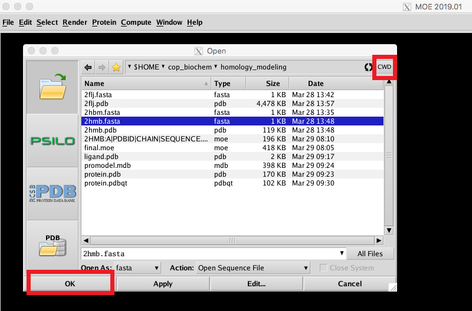

Load files, align sequences, and build model in the Molecular Operating Environment
A program called MOE will be used to build the homology model using the FASTA sequence of your target and the PDB file of your template. After loading in these files, the sequences are aligned and the target sequence is superposed onto the template structure. From this, MOE will build multiple homology models, minimize them, then select the best one to be the final model.
| On Mac, please search "MOE" in the "Launchpad" and then double click it. | |
|  | In the MOE main window, click File->Open. Navigate to your homology_modeling directory and click CWD to set this as your current working directory. Select your target FASTA sequence from the list and click OK to exit the window. |
 |
|
| In the MOE main window, click File->Open as before. Select your template PDB and target PDB and then click OK to load it into MOE. Keep the defaults in the pop-up window and click OK. | |
 |
|
| To align the target and template sequences, select both chains and click Alignment->Align/Superpose, click Align and Superpose. MOE will align the sequences, placing gaps if necessary. Compare the alignment with your saved BLAST search results to confirm that they are the same. | |
| To begin modeling, click Protein->Homology Model in the sequence editor. The Current System and Output Database fields at the top of this window indicate file names that data will be saved to. The current molecular state (structure AND alignment) will be saved to the MOE file given in Current System. All intermediate models plus a final model (based on the best intermediate model) will be saved to the MDB file given in Output Database. Ten intermediate models are generated as a default. Then click Build. | |
 |
|
| Open a new MOE window, Click File->Open and select the PDB of your homology model.In main window, right-click->select->Hydrogens, and then the molecule will be pink, In right menu-> Delete, Click File->Save to save a new PDB file without hydrogens . Exit MOE. |